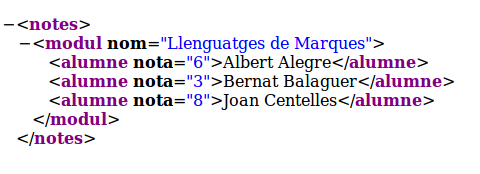

En els exemples anteriors hem processat de forma molt bàsica el resultat. Hem recorregut el XQResultSequence, per a traure tot el contingut de cada element, passant-lo a String
En realitat XQJ ens ofereix més possibilitats, que ara veurem de forma resumida.
Moviment
XQJ ens permet els següents mètodes de moviment o relacionats amb el moviment:
next(), previous(), first(), last(), beforeFirst(), afterLast(), getPosition(), isLast(), isFirst(), isAfterLast(), isBeforeFirst(), count()
Tots ells són de fàcil comprensió. L'únic problema és que la connexió ha de permetre el moviment en les dues direccions. Per defecte només es pot anar cap avant (forward only). Es pot canviar modificant les propietats de la connexió per a que siga SCROLLTYPE_SCROLLABLE, com es veu en el següent exemple, que és una modificació dels exercicis anteriors per a recórrer de forma inversa:
import javax.xml.xquery.XQConnection;
import javax.xml.xquery.XQConstants;
import javax.xml.xquery.XQDataSource;
import javax.xml.xquery.XQException;
import javax.xml.xquery.XQPreparedExpression;
import javax.xml.xquery.XQResultSequence;
import javax.xml.xquery.XQStaticContext;
import net.xqj.exist.ExistXQDataSource;
public class Prova3_XQJ {
public static void main(String[] args) throws XQException {
XQDataSource s = new ExistXQDataSource();
s.setProperty("serverName", "localhost");
s.setProperty("port", "8080");
s.setProperty("user", "admin");
s.setProperty("password", "admin");
XQConnection conn = s.getConnection();
String sent ="for $alumne in //alumne order by $alumne/cognoms return $alumne";
XQStaticContext cntxt = conn.getStaticContext();
cntxt.setScrollability( XQConstants.SCROLLTYPE_SCROLLABLE);
conn.setStaticContext(cntxt);
XQPreparedExpression cons = conn.prepareExpression(sent);
XQResultSequence rs = cons.executeQuery();
rs.afterLast();
while(rs.previous())
System.out.println(rs.getItemAsString(null));
conn.close();
}
}
Obtenció del contingut
Si volem traure ja directament contingut de text, per exemple els cognoms dels alumnes, podem endur-nos alguna sorpresa. Per exemple, el següent exemple per a traure els cognoms dels alumnes per ordre alfabètic:
import javax.xml.xquery.XQConnection;
import javax.xml.xquery.XQDataSource;
import javax.xml.xquery.XQException;
import javax.xml.xquery.XQResultSequence;
import net.xqj.exist.ExistXQDataSource;
public class Prova4_XQJ {
public static void main(String[] args) throws XQException {
XQDataSource s = new ExistXQDataSource();
s.setProperty("serverName", "localhost");
s.setProperty("port", "8080");
s.setProperty("user", "admin");
s.setProperty("password", "admin");
XQConnection conn = s.getConnection();
String sent = "//alumne/cognoms/text()";
XQResultSequence rs = conn.createExpression().executeQuery(sent);
while (rs.next())
System.out.println(rs.getItemAsString(null));
conn.close();
}
}
No ens traurà el text tan senzill com ens pensàvem, sinó que l'eixida serà:
text { "Alegre" }
text { "Balaguer" }
text { "Centelles" }
indicant-nos que el resultat són nodes de text. Ho podem solucionar d'una forma molt senzilla utilitzant la funció xs:string(), que ho converteix a string normal. Únicament canviant la sentència per aquesta:
String sent = "//alumne/cognoms/xs:string(text())";
el resultat ja serà el que preteníem:
Alegre
Balaguer
Centelles
També tenim una sèrie de mètodes per a obtenir el contingut que ve en un determinat format (numèric, ...) de forma adequada:
getInt(), getBoolean(), getByte(), getDouble(), ...
Però hem de fer que des de la consulta vinga la informació ja en el format adequat. El següent exemple agafa únicament les notes dels alumnes. I aquesta informació ve de forma numèrica (amb la funció xs:int() ), aleshores podem utilitzar getInt() :
import javax.xml.xquery.XQConnection;
import javax.xml.xquery.XQDataSource;
import javax.xml.xquery.XQException;
import javax.xml.xquery.XQPreparedExpression;
import javax.xml.xquery.XQResultSequence;
import net.xqj.exist.ExistXQDataSource;
public class Prova5_XQJ {
public static void main(String[] args) throws XQException {
XQDataSource s = new ExistXQDataSource();
s.setProperty("serverName", "localhost");
s.setProperty("port", "8080");
s.setProperty("user", "admin");
s.setProperty("password", "admin");
XQConnection conn = s.getConnection();
String sent ="for $alumne in //alumne return xs:int($alumne/nota/text())";
XQPreparedExpression cons = conn.prepareExpression(sent);
XQResultSequence rs = cons.executeQuery();
while(rs.next())
System.out.println(rs.getInt());
conn.close();
}
}
6
3
8
Però encara serà més interessant que quan ens vinga un element, poder analitzar i extraure els seus subelements, atributs, ...
Per a poder fer açò ens valdrem dels documents DOM, vistos en el tema 3. Per a poder passar la informació utilitzarem el mètode getObject()
En el següent exemple, de la consulta obtenim els element, que passem a un element DOM. Posteriorment extraurem la informació del nom, cognoms i nota:
import javax.xml.xquery.XQConnection;
import javax.xml.xquery.XQDataSource;
import javax.xml.xquery.XQException;
import javax.xml.xquery.XQPreparedExpression;
import javax.xml.xquery.XQResultSequence;
import net.xqj.exist.ExistXQDataSource;
import org.w3c.dom.Element;
public class Prova6_XQJ {
public static void main(String[] args) throws XQException {
XQDataSource s = new ExistXQDataSource();
s.setProperty("serverName", "localhost");
s.setProperty("port", "8080");
s.setProperty("user", "admin");
s.setProperty("password", "admin");
XQConnection conn = s.getConnection();
String sent ="for $alumne in //alumne order by $alumne/cognoms return $alumne";
XQPreparedExpression cons = conn.prepareExpression(sent);
XQResultSequence rs = cons.executeQuery();
while(rs.next()) {
Element el = (Element) rs.getObject();
System.out.print(el.getElementsByTagName("nom").item(0).getFirstChild().getNodeValue() + " ");
System.out.print(el.getElementsByTagName("cognoms").item(0).getFirstChild().getNodeValue() + ": ");
System.out.println(el.getElementsByTagName("nota").item(0).getFirstChild().getNodeValue());
}
conn.close();
}
}
Albert Alegre: 6
Bernat Balaguer: 3
Joan Centelles: 8
Un altre exemple interessant pot ser guardar un fitxer amb una determinada informació (transformada) d'un document guardat en la Base de Dades.
import java.io.BufferedWriter;
import java.io.File;
import java.io.FileWriter;
import java.io.IOException;
import javax.xml.xquery.XQConnection;
import javax.xml.xquery.XQDataSource;
import javax.xml.xquery.XQException;
import javax.xml.xquery.XQPreparedExpression;
import javax.xml.xquery.XQResultSequence;
import net.xqj.exist.ExistXQDataSource;
public class Prova7_XQJ {
public static void main(String[] args) throws XQException {
File f = new File("notes.xml");
XQDataSource s = new ExistXQDataSource();
s.setProperty("serverName", "localhost");
s.setProperty("port", "8080");
s.setProperty("user", "admin");
s.setProperty("password", "admin");
XQConnection conn = s.getConnection();
String sent ="for $classe in /classe " +
"return <notes> <modul nom=\"{$classe/assignatura/text()}\">" +
"{for $alumne in $classe//alumne " +
"order by $alumne/cognoms " +
"return <alumne nota=\"{$alumne/nota/text()}\">" +
"{concat($alumne/nom/text(), \" \", $alumne/cognoms)}"+
"</alumne>} </modul> </notes> ";
XQPreparedExpression cons = conn.prepareExpression(sent);
XQResultSequence rs = cons.executeQuery();
try {
BufferedWriter bw = new BufferedWriter(new FileWriter(f));
bw.write("<?xml version='1.0' ?>" + " ");
while(rs.next()) {
String linia = rs.getItemAsString(null);
System.out.println(linia);
bw.write(linia + " ");
}
bw.close();
} catch (IOException e)
{e.printStackTrace();}
conn.close();
}
}
El resultat serà el següent fitxer notes.xml (a banda que també eixirà per l'eixida estàndar):
<?xml version='1.0' ?> <notes>
<modul nom="Llenguatges de Marques" xmlns="">
<alumne nota="6" xmlns="">Albert Alegre</alumne>
<alumne nota="3" xmlns="">Bernat Balaguer</alumne>
<alumne nota="8" xmlns="">Joan Centelles</alumne>
</modul>
</notes>
que com es veu, està ben format. Aquesta seria la visualització des d'un navegador:
